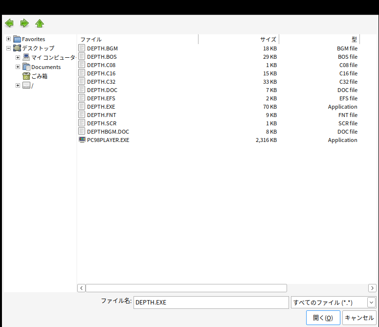
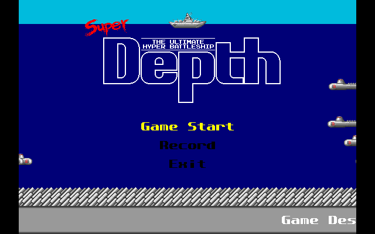
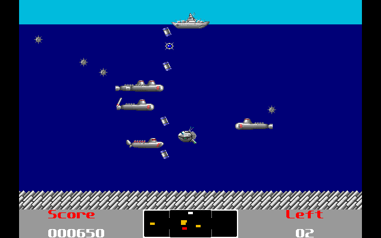
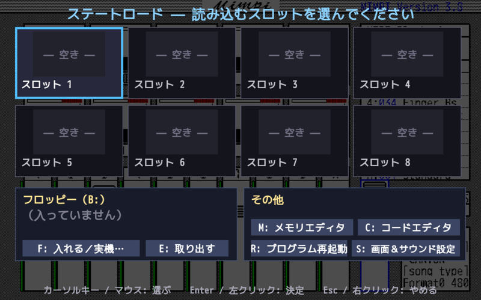
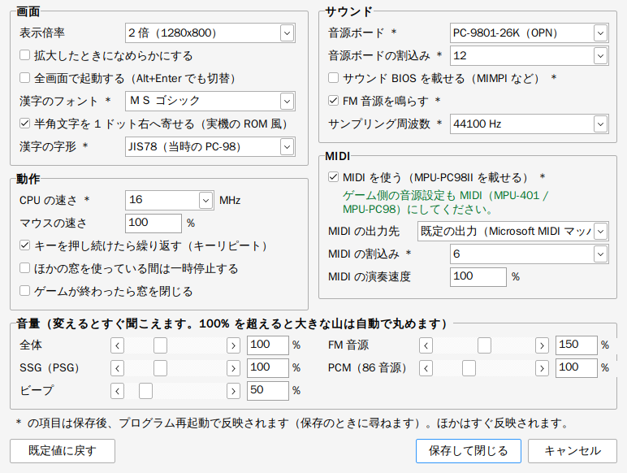

ハードディスクにインストールした状態のゲームのフォルダをコピーして、その中で PC98PLAYER.EXE を実行する、いちばん基本の遊び方です。Bio_100% の『Super Depth』を例に、最初の起動から順に説明します。
PC98PLAYER.EXE実機の ROM、MS-DOS 本体、フロッピーやハードディスクのイメージは要りません。
この章では、Bio_100% の名作フリーソフト 『Super Depth』（1991年、alty & tacox）を例に、最初の起動から遊ぶところまでを順に説明します。
Super Depth は、ファイルを 1 つのフォルダに置いて DEPTH.EXE を実行するだけで動く、インストールのいらないゲームです。手元に無い場合は、お手持ちのゲームに読み替えてください。
PC98PLAYER.EXE をコピーしてダブルクリックDEPTH.EXE を選ぶ好きな場所にフォルダを作り（例: C:\PC98\SuperDepth）、Super Depth のアーカイブ（SuperDepth.zip など）の中身をすべて入れます。
C:\PC98\SuperDepth\
DEPTH.EXE ← 実行ファイル
DEPTH.BGM DEPTH.EFS DEPTH.FNT ← BGM・効果音・フォント
DEPTH.C08 DEPTH.C16 DEPTH.C32 DEPTH.BOS ← キャラクタ
DEPTH.SCR ← ハイスコア（無ければ自動で作られます）
DEPTH.DOC DEPTHBGM.DOC ← 説明書（メモ帳で読めます。Shift_JIS）
これが「ゲームのフォルダ」です。PC98PLAYER からは、このフォルダがハードディスクの A: ドライブに見えます。
PC98PLAYER.EXE をこのフォルダにコピーして、ダブルクリックします。
（EXE を 1 か所に置いたまま、ショートカットで起動することもできます → 1-5）
フォルダに設定ファイル PC98PLAYER.INI が無いとき（初回）は、ゲームのフォルダを開いたファイル選択の画面が出ます。
Super Depth では DEPTH.EXE が最初から選ばれているので、そのまま「開く」を押します。

DEPTH.EXE を選んで「開く」。選んだファイル名を Start= に書いた PC98PLAYER.INI がフォルダに作られ、そのままゲームが始まります。
次からは PC98PLAYER.EXE をダブルクリックするだけで、この選択の画面は出ずに始まります。
[PC98PLAYER] Start=DEPTH.EXE
Bio_100% のロゴのあと、タイトル画面になります。

キーボードがそのまま PC-98 のキーボードになります。Super Depth の操作は次のとおりです（ゲームの説明書 DEPTH.DOC より）。
| キー | はたらき |
|---|---|
| カーソルキー／テンキーの 2・4・6・8 | メニューを選ぶ・戦艦を動かす |
| Z・X（メニューでは Space も） | 決定・攻撃 |
| Esc・Q | ゲーム中: ポーズ（ポーズ中に Q で終了）／タイトル画面: 終了 |
「Game Start」を選んで Z を押すと、ゲームが始まります。

PC98PLAYER.EXE のあるフォルダ）を開きます。1-5 の順番で決まったフォルダです。SHELL= に書かれた起動用のプログラム（例: SHELL=MPSTART.COM）、次に AUTOEXEC.BAT、次にほかのバッチや実行ファイルです。サウンドドライバなどを組み込んでからゲームを起動するものが多いので、ゲーム本体（MP.COM など）を直接選ぶと音楽が鳴らないことがあります。ゲームの説明書で「〇〇.BAT で起動」とあるファイルを選んでください。Start= をメモ帳で書き直して、もう一度起動してください。GAME\GAME.EXE）を選ぶと、そのフォルダをカレントにして起動します。GAME.BAT など）を Start= にすると、サウンドドライバの常駐なども含めて実機と同じ手順で起動します。
バッチの中の SUBST E: \ZAVAS2\EPL のような SUBST（フォルダを別のドライブ名で見せる）にも対応しているので、ドライブ名をたくさん作って使うゲーム（サバッシュⅡなど）もそのまま動かせます。| Windows のキー・操作 | PC-98 での意味 |
|---|---|
| 英数字・記号キー | 物理的な位置どおり（JIS 配列基準） |
| F1〜F10 | f･1〜f･10 |
| Alt | GRPH |
| カタカナひらがな / 変換 / 無変換 | カナ / XFER / NFER |
| Home / End | HOME CLR / HELP |
| PageDown / PageUp | ROLL UP / ROLL DOWN |
| Insert / Delete | INS / DEL |
| Pause または ScrollLock | STOP |
| PrintScreen | COPY |
| ウインドウをクリック | マウスを捕まえる（PC-98 のマウスとして動きます） |
| F12 または中ボタン（ホイール）クリック | マウスを放す（中ボタンは MiddleRelease=0 で無効） |
| Shift+F11 | ステートセーブ（保存先を選ぶ画面） |
| F11 | ステートロード（読み込むスロットを選ぶ画面） |
| Shift+F12（押している間） | 早送り |
| Alt+Enter | 全画面表示の切り替え |
| Alt+F4 | 終了 |
| ゲームパッド | 音源ボードのジョイスティック端子につないだ ATARI 仕様のジョイスティック（ボタンにキーも割り当て可。1-11） |
ゲームの途中でセーブできない PC-98 のゲームでも、その瞬間の状態をまるごと保存・再開できます。

PC98PLAYER.SAV\SLOT1.P98S〜SLOT8.P98S です（1 個 約 1.4MB）。窓を閉じても残ります。PC98PLAYER.INI も読み直します。INI をメモ帳で書き換えて保存 → F11 → R →「はい」で、PC98PLAYER を閉じずに新しい設定で試せます（1-8 の「INI の読み直し」）。PC98PLAYER.EXE を 1 か所（例: C:\PC98PLAYER\）に置いたまま、ゲームごとにショートカットを作って起動できます。
PC98PLAYER.INI を置きます（無ければ初回起動時に作られます）。PC98PLAYER.EXE のショートカットを作り、プロパティの「作業フォルダー」にゲームのフォルダを指定します。どのフォルダのゲームを動かすかは、次の順に決まります。
| 順番 | 条件 | ゲームのフォルダ |
|---|---|---|
| 1 | 起動時の引数にフォルダか INI を指定した | そのフォルダ（INI なら INI のあるフォルダ） |
| 2 | 作業フォルダー（カレント）に PC98PLAYER.INI がある | 作業フォルダー |
| 3 | 作業フォルダーに INI は無いが、実行ファイル（.BAT/.COM/.EXE）がある | 作業フォルダー |
| 4 | 上のどれでもない | EXE のフォルダ |
INI に Root= を書くと、ゲームのフォルダを INI とは別の場所にできます（INI からの相対パスも可）。INI を 1 つのフォルダにまとめて管理したいときに便利です。
; C:\PC98\INI\DOUKYU2.INI [PC98PLAYER] Root=..\GAMES\DOUKYU2 Start=NANPA2.BAT
この場合はショートカットのリンク先を C:\PC98PLAYER\PC98PLAYER.EXE C:\PC98\INI\DOUKYU2.INI のようにします。
| 書き方 | 意味 |
|---|---|
PC98PLAYER.EXE | 上の順番で決まったフォルダのゲームを起動します。 |
PC98PLAYER.EXE フォルダ | 指定したフォルダのゲームを、そのフォルダの PC98PLAYER.INI で起動します。 |
PC98PLAYER.EXE 設定ファイル.INI | 指定した INI で起動します。 |
PC98PLAYER.EXE イメージ.HDI | インストールアシスタント: ハードディスクイメージを作業フォルダーへ展開します（第二章）。 |
PC98PLAYER.EXE DISK1.FDI DISK2.FDI … | インストールアシスタント: フロッピーイメージからインストールします（第三章）。 |
PC98PLAYER.EXE A:\ | インストールアシスタント: 本物のフロッピードライブからインストールします（第三章）。 |
PC98PLAYER.EXE --fontsheet | 漢字の字形の一覧を PC98FONT.BMP に書き出して終了します（文字化けの確認用）。 |
エクスプローラーで、ファイルやドライブを PC98PLAYER.EXE のアイコンにドロップしても同じです。
ゲームのフォルダはハードディスク（既定は A:）として見せたまま、フロッピーのイメージや本物のフロッピードライブを別のドライブ（既定は B:）に入れられます。 「マスターディスク（キーディスク）を入れてください」と求めるゲームなどで使います。
FloppyImage=（イメージのファイル名。ゲームのフォルダからの相対パスかフルパス）と FloppyDrive= を書きます。FloppyImage= は FloppyDisk= と書いても同じです（本物のドライブやフォルダを指すときは、こちらのほうが読みやすいかもしれません）。FloppyImage= にフォルダ名を書くと（例: FloppyImage=DISK_A\ や FloppyImage=E:\GAME\PC98\メルクリウスプリティ\DISK_A\）、そのフォルダの中身をそのままフロッピーのドライブとして見せます。
キーディスクの中のファイルがあるかどうか・中身が正しいかを確かめるだけのゲームなら、ディスクの中身をフォルダにコピーしておけばイメージは要りません。
ファイルの読み書きはそのフォルダに対して行います。セクタ単位の読み書き（INT 1Bh・INT 25h）はできないので、特殊なセクタを確かめるプロテクトには使えません。
F11 の画面の「F: 入れる／実機…」のメニューの「フォルダを入れる…」からも入れられます。FloppyDisk=FDD:A（USB フロッピー）や FloppyDisk=GW（Greaseweazle）。詳しくは第三章 3-7。[PC98PLAYER] Start=GAME.BAT FloppyImage=MASTER.D88 FloppyDrive=B
実機のフロッピードライブ 2 台を前提にしたゲーム（「A ディスクをドライブ 1 に、B ディスクをドライブ 2 に入れて起動」など）は、
FloppyDisk2= で 2 台目のドライブにもディスクを入れます。ドライブ名は FloppyDrive=・FloppyDrive2=・Drive=（ゲームのフォルダ＝ハードディスク）で自由に並べられます。
; 例: ランス３（アリスソフト。配布フリー版）。A ディスクの AUTOEXEC.BAT から、実機と同じ形で動かす [PC98PLAYER] Drive=C FloppyDrive=A FloppyDisk=ADISK_GR.D88 FloppyDrive2=B FloppyDisk2=BDISK.D88 Start=A:\AUTOEXEC.BAT
ゲームのフォルダの PC98PLAYER.INI をメモ帳などで編集します。文字コードは Shift_JIS・UTF-8 のどちらでも構いません。
; から行末まではコメントです。書かなかった項目は既定値になります。
設定INI作成.html をブラウザで開くと、項目を選ぶだけで INI ができあがり、［ダウンロード］で PC98PLAYER.INI として保存できます（ネットにはつながりません）。最初に実行するプログラムやフロッピーイメージはファイル選択・ドラッグ＆ドロップで入れられ、今ある INI を読み込んで直すこともできます。ゲーム中に F11 →「S: 画面＆サウンド設定」（S キー）で、よく変える項目を画面の上で直し、PC98PLAYER.INI に保存できます。メモ帳で INI を開く必要はありません。

MIDI=1）・出力先（Windows の MIDI 出力の一覧から選ぶ）・割込み・演奏速度。すぐ反映される項目（音量・倍率・なめらか・マウスの速さ・MIDI の出力先・演奏速度など）は、変えた時点で効きます。＊ の付いた項目（音源ボード・MIDI を使う・CPU の速さ・フォントなど）は、プログラム再起動で反映されます。
[PC98PLAYER] の最後に足します。コメントや並び、文字コード（Shift_JIS／UTF-8）はそのままです。変えていない項目は書きません。PauseInactive=1 でもこの窓に移ったときは止めません）。インストールアシスタントで動かしているときは INI が無いので開けません。ここに無い項目（フロッピー・メモリ・ゲームパッドなど）は、これまでどおり INI をメモ帳で直すか、設定INI作成.html を使います。INI の読み直し: 動かしたまま INI を書き換えて保存し、F11 の画面の「R: プログラム再起動」を実行すると、INI を読み直してから PC-98 を起動し直します。 設定を変えては試す、を EXE を立ち上げ直さずに繰り返せます。
Start=・CpuMHz=・音・メモリ・Drive=・ゲームパッド・Title=・Scale=・FullScreen=・SampleRate=・MIDI= など）がそのまま反映されます。FloppyDisk=／FloppyImage= は、書き換えたときだけ入れ替えます。変えていなければ、F11 の画面で入れ替えたフロッピーがそのまま入っています。Trace= は、一度記録を始めると、終了するまで記録したままです。Start= が空、などのときは、今の設定のまま起動し直します（そのことを画面に知らせます）。| 項目 | 既定値 | 説明 |
|---|---|---|
Start= | （必須） | 最初に実行するプログラムまたはバッチファイル。GAME\GAME.EXE のようにサブフォルダのファイルならそのフォルダを、B:\INSTALL.BAT のようにドライブ付きならそのドライブをカレントにして実行します。 |
Args= | なし | Start= に渡す引数。 |
Title= | フォルダ名 | ウインドウのタイトル。 |
Root= | INI のフォルダ | ゲームのフォルダ（INI からの相対パス可）。 |
ExitOnEnd= | 1 | 1: ゲーム（バッチ）が終わったら窓を閉じる。0: 閉じずに最後の画面を残す（エラーメッセージの確認に便利）。 |
Drive= | A | ゲームのフォルダを何ドライブとして見せるか。ゲームが特定のドライブ名を前提にしている場合に変えます。 |
CurrentDrive= | なし | 起動したときのカレントドライブ。書かなければ Start= に付けたドライブ（無ければゲームのドライブ）。 |
CurrentDirectory= | なし | 起動したときのカレントディレクトリ（例 A:\NANPA\）。ドライブを付けるとカレントドライブも兼ねます。ゲームのドライブに無いフォルダは起動時に作ります。「\NANPA を作ってそこから実行」と説明書にあるインストーラ向け。 |
FreeSpaceMB= | 96 | ゲームのドライブの空き容量として見せる大きさ（MB、1〜1000）。大きすぎると計算があふれて「空きが足りない」と言うソフトがあるためです。 |
DOSVersion= | 5.00 | ゲームに見せる MS-DOS の版。「DOS のバージョンが違います」と出る場合に 3.30 などを試します。 |
FakeYear= | なし | ゲームに見せる年だけを置き換えます（例: FakeYear=1998）。2000 年問題を参照。 |
FakeDate= | なし | 起動した日をこの日付として見せます（例: FakeDate=1999/12/31）。FakeYear= より優先。 |
| 項目 | 既定値 | 説明 |
|---|---|---|
FloppyDisk=FloppyImage= | なし | 起動と同時に入れるフロッピー（どちらの名前で書いても同じ働きです。両方あれば FloppyDisk= を使います）。イメージのファイル名のほか、FDD:A（USB フロッピー）、GW・GW:COM5（Greaseweazle）で本物のドライブも使えます。フォルダ名を書くと、そのフォルダをフロッピーとして見せます（下の 1-7）。 |
Boot= | なし | FD にすると、MS-DOS を使わずに FloppyDisk= のフロッピーから直接起動します（PC-98 初期の独自形式のディスク。第三章 3-11）。 |
FloppyDisk2= | なし | 2 台目のフロッピードライブに入れるディスク（1-7 の「ドライブ 2 台」）。 |
FloppyDrive2= | 1 台目の次 | 2 台目のフロッピーのドライブ名（FloppyDisk2= を書いたとき）。 |
FloppyDrive= | B | フロッピーを何ドライブとして見せるか（A〜Z。Drive= と同じ文字なら次の文字にずらします）。 |
FloppyWriteProtect= | 0 | 1: 入れるフロッピーを必ず書き込み禁止にして見せる（「ライトプロテクト状態ではありません」と止まるインストーラ向け）。1 枚ずつなら F11 →「F: 入れる／実機…」のメニューの「書き込み禁止（ライトプロテクト）」でも切り替えられます。 |
GWDrive= | A | Greaseweazle につないだドライブ（A / B。Shugart 接続なら 0 / 1 / 2）。 |
GWRevs= | 3 | Greaseweazle で 1 トラックを何回転ぶん読むか（1〜8）。 |
| 項目 | 既定値 | 説明 |
|---|---|---|
Scale= | 2 | 表示倍率（1 で 640×400）。1〜8。 |
FullScreen= | 0 | 1 で起動時から全画面。 |
Smooth= | 0 | 1 で拡大時になめらかにする（0 はドットのまま）。 |
Font= | ＭＳ ゴシック | 漢字の字形を作るもとにする Windows のフォント。 |
FontShift= | 1 | 半角文字が左端の列まで使っていたら 1 ドット右へ寄せ、実機の ROM と同じく左端を空ける。0 で Windows のフォントのまま（MIMPI V4 の曲名のように、半角を太字にして描くソフトで線が点線のように崩れるのを防ぐ）。 |
KanjiJIS= | 78 | 78: PC-98 と同じ旧 JIS の字の並び。83: 新 JIS の並び。 |
| 項目 | 既定値 | 説明 |
|---|---|---|
CpuMHz= | 16 | 仮想 CPU の速さ（MHz 相当）。命令の重さは 386 程度で数えているため、i486DX2（66MHz）推奨のソフトは 100〜133 くらいが目安です。上げるほどパソコン側の負荷が増えます。 |
IdleSkip= | 1 | 1: ゲームが割込みを待って同じところを回っているだけのとき、その間の命令を実行せずに待つ（結果は変わらず、早送りが速くなり、パソコンの負荷も下がります）。0: しない（おかしな動きをするときの確認用）。 |
MouseSpeed= | 100 | マウスの速さ（%）。 |
MouseDriver= | 1 | 1: マウスドライバ（MOUSE.COM 相当）を用意する。0: 用意しない。 |
KeyRepeat= | 1 | 0 にするとキーの押しっぱなしで連打を送らない。 |
PauseInactive= | 0 | 1 で、ほかのウインドウを操作している間ゲームを止める。 |
MouseLockDisable= | 0 | 1: マウスを一切捕まえません（マウスを使わないソフト向け）。 2: 捕まえずに（Windows のカーソルは自由に窓の外へ出せる）、カーソルがゲームの画面の上にある間だけ、その動きとボタンをゲームへ送ります。 メモリエディタなど、ほかの窓と行き来しながら遊ぶときに便利です。Windows のカーソルは画面の上でも表示したままです（勢いよく動かすと外へ出ます）。 |
MiddleRelease= | 1 | 中ボタン（ホイール）クリックでマウスを放す。0 で無効。 |
| 項目 | 既定値 | 説明 |
|---|---|---|
Joystick= | 1 | 0 にすると、ゲームパッドを使いません。 |
JoyDevice= | 0 | 0: 最初に見つかったゲームパッド。1〜16: その番号のゲームコントローラ（2 台以上つないでいるとき）。 |
JoyDirection= | JOY | スティック・十字キーの行き先。JOY（ジョイスティック）／CURSOR（カーソルキー）／TENKEY（テンキーの 8・4・6・2）／NONE。JOY+CURSOR のように重ねられます。 |
JoyButton1=〜JoyButton32= | 1=A 2=B 3=SPACE 4=RETURN | ボタンの割り当て（番号は Windows の「ゲーム コントローラーの設定」のボタン番号）。A／B = トリガ、RAPIDA／RAPIDB = 連射、キー名、NONE。A+RETURN のように重ねられます（1-11）。 |
JoyDeadZone= | 50 | アナログスティックの遊び（%）。これより大きく倒すと入ります。 |
JoyRapid= | 4 | 連射の速さ。何フレーム（1/60 秒）ごとに押す／放すを切り替えるか（1〜30。小さいほど速い）。 |
| 項目 | 既定値 | 説明 |
|---|---|---|
SoundBoard= | 86 | 86: PC-9801-86 相当（FM 6 音＋SSG＋リズム＋PCM）。26: PC-9801-26K 相当（FM 3 音＋SSG）。0: 音源なし。 |
SoundBIOS= | 0 | 1 で音源ボードの ROM（サウンド BIOS、CC00h・INT D2h）を載せる。MIDI プレーヤーの MIMPI などが FM 音源で演奏するのに使う。音色は PC98PLAYER が用意したもので、実機の ROM とは違う。 |
SoundIRQ= | 12 | 音源ボードの割込み（3 / 10 / 12 / 13）。 |
Sound= | 1 | 0 で FM 音源の音を出さない（ボード自体はある扱い）。 |
Volume= | 100 | 全体の音量（%、0〜1000）。100 を超えて上げると、大きな山は自動で丸めて音割れを抑えます。 |
FMVolume= / SSGVolume= | 100 | FM 音源・SSG の音量（%）。 |
PCMVolume= | 100 | 86 ボードの PCM の音量（%）。 |
BeepVolume= | 50 | ビープ音の音量（%）。 |
RhythmROM= | なし | リズム音源のサンプル（2608_RYM.WAV など）。無くても内蔵の合成音で鳴ります。 |
SampleRate= | 44100 | 出力のサンプリング周波数。 |
MIDI= | 0 | 1 で MIDI 音源（MPU-PC98II 相当）を載せ、Windows の MIDI 出力へ送る。RS-232C に MIDI インターフェースをつなぐ設定のゲームも、RS-232C に送ったバイトを同じ MIDI 出力へ送る。 |
MidiDevice= | -1 | MIDI の出力先の番号（-1 は Windows の既定）。 |
MidiIRQ= | 6 | MIDI ボードの割込み。 |
MidiSpeedFix= | 100 | MIDI の演奏速度（%、10〜1000）。「MIDI のときだけ曲が遅い」ソフトで 120〜150 などに。 |
| 項目 | 既定値 | 説明 |
|---|---|---|
EMS= | 1 | 1: EMS（EMM386 相当）を用意する。 |
EMSKB= | 4096 | EMS の容量（KB）。 |
XMS= | 1 | 1: XMS（HIMEM.SYS 相当）を用意する。 |
XMSKB= | 8192 | XMS の容量（KB）。 |
MemoryKB= | 640 | 通常メモリの大きさ（KB）。 |
FirstMCB= | 0200 | 空きメモリの始まる位置（16 進のセグメント）。一部のゲームはこの位置によって動いたり落ちたりします（第四章）。 |
| 項目 | 既定値 | 説明 |
|---|---|---|
Trace= | 0 | 1 にすると、ゲームのフォルダに PC98PLAYER.LOG を書き出します（第四章 4-10）。 |
MemoryEditor= | 0 | 1 にすると、起動と同時にメモリエディタを別の窓で開きます。 |
CodeEditor= | 0 | 1 にすると、起動と同時にコードエディタを別の窓で開きます。 |
; 東方 Project（PC-98 版） [PC98PLAYER] Start=GAME.BAT SoundBoard=86 SoundIRQ=12 ; 古いゲームで速すぎる・メモリ関係で落ちる場合の例 [PC98PLAYER] Start=GAME.EXE CpuMHz=8 EMS=0 XMS=0 ExitOnEnd=0
ゲームに付属のサウンドドライバ（PMD・MMD・PLAY5 など）は、バッチファイルに書かれたとおり本当に常駐して鳴ります。
SoundBoard=86 で、86 ボード用のドライバが選ばれるのが普通です。SoundBoard=26 を試してください。SoundIRQ= を合わせます（INT0=3、INT41=10、INT5=12、INT6=13）。MIDI=1 にすると、ゲームが FM より MIDI を選ぶことがあります。Windows 標準の MIDI 音源は当時の音源（SC-55 や MT-32）と音色が異なるので、FM で聴きたい場合は 0 のままにしてください。実機で CONFIG.SYS に HIMEM.SYS（XMS）や EMM386.EXE（EMS）を組み込んでいた状態を再現します。
ゲームの CONFIG.SYS に書かれたドライバは読み込まれません。代わりに、この設定で同じ機能を用意します。
EMS=0、XMS=0 を 1 つずつ試してください。PC-9801-26K・86 などの音源ボードには、ATARI 仕様のジョイスティック（上下左右とトリガ A・B の 2 ボタン）をつなぐ端子がありました。 ジョイスティックに対応したゲームは、この端子を音源（YM2608）の I/O ポートから直接読みます。PC98PLAYER は、Windows につないだゲームパッドをこの端子に割り当てます。
ジョイスティックに対応していないゲームでも、ボタンに PC-98 のキーを割り当てれば、ゲームパッドで遊べます。方向は JoyDirection=CURSOR（カーソルキー）か TENKEY（テンキー）にします。
; ジョイスティック対応のシューティング（ボタン 3 を A の連射に） JoyButton1=A JoyButton2=B JoyButton3=RAPIDA ; キーボードだけのアドベンチャー（方向はカーソルキー、ボタンは決定・取り消し） JoyDirection=CURSOR JoyButton1=RETURN JoyButton2=ESC JoyButton3=SPACE JoyButton8=F1
使えるキー名（大文字・小文字は区別しません）:
| 種類 | 書き方 |
|---|---|
| ジョイスティック | A B（トリガ）、RAPIDA RAPIDB（連射）、JOYUP JOYDOWN JOYLEFT JOYRIGHT |
| 文字 | KEYA KEYB（文字の A・B キー。A・B だけだとトリガになります）、C〜Z、0〜9 |
| よく使うキー | RETURN（ENTER）SPACE ESC TAB BS UP DOWN LEFT RIGHT |
| ファンクション | F1〜F10、VF1〜VF5 |
| 特殊キー | SHIFT CTRL GRPH KANA CAPS XFER NFER ROLLUP ROLLDOWN INS DEL HOME HELP STOP COPY |
| テンキー | NUM0〜NUM9 NUM+ NUM- NUM* NUM/ NUM= NUM, NUM. |
| 記号 | MINUS CARET YEN AT [ ] SEMICOLON COLON COMMA PERIOD SLASH UNDERSCORE |
| キーコード | 0x1C のように PC-98 のキーコードを 16 進で |
読めない書き方があると、起動したとき（または再起動したとき）に画面の下に知らせます。割り当てを変えたら、F11 → R で読み直して試せます。
ボタンの番号が分からないときは、Windows の「USB ゲーム コントローラーのセットアップ」（joy.cpl）の「プロパティ」で、押したボタンの番号が光ります。